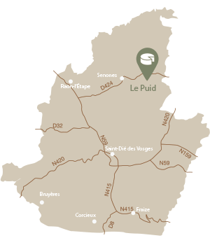

Antoine et Églantine sont installés au Puid, leur élevage ovin se compose de 500 brebis de races différentes, dont l’emblématique race de Thones et Marthod aux cornes torsadées. Elles pâturent toute la belle saison sur 87 hectares de prairies naturelles autour des villages environnants. La ferme est dotée d’une volière fournie de pigeons, canards, faisans, poules. Il y a également un cochon, des chevaux, un âne et une colonie de lapins. Un cadre idéal pour la nouvelle activité d’Églantine : une ferme pédagogique ouverte à des groupes d’enfants comme d’adultes. La majeure partie des brebis élevées par Antoine sont destinées à la vente en vif aux particuliers, les autres sont traites deux fois par jour, pendant 7 mois, afin de transformer le lait à la ferme en fromage et en yaourt de brebis.
Le Haut du village
88210 Le Puid
Tél : 06 77 57 41 21
Mail : gaecbrebisetcompagnie@gmail.com
Site : www.salm-confitures-bio.fr